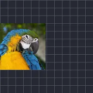

Eco de quadros-chave

Desenha cópias da camada como ela estava há um instante, seguindo sua animação.
Os Quadros-chave de Eco desenham cópias da camada como ela era um momento atrás, então uma camada em movimento deixa um rastro. Segundos é o quão atrás as cópias estão, Contagem quantas são, Alfa o quão visíveis elas são e Composição se ficam Atrás ou Sobre a camada.
Configurações
| Configuração | Tipo | Intervalo | Padrão |
|---|---|---|---|
| Segundos | Número | -60 a 60 | 0.5 |
| Quantidade | Número | 0 a 20 | 1 |
| Alfa | Número | 0 a 1 | 1 |
| Composição | Opção | Atrás, Sobre | Atrás |